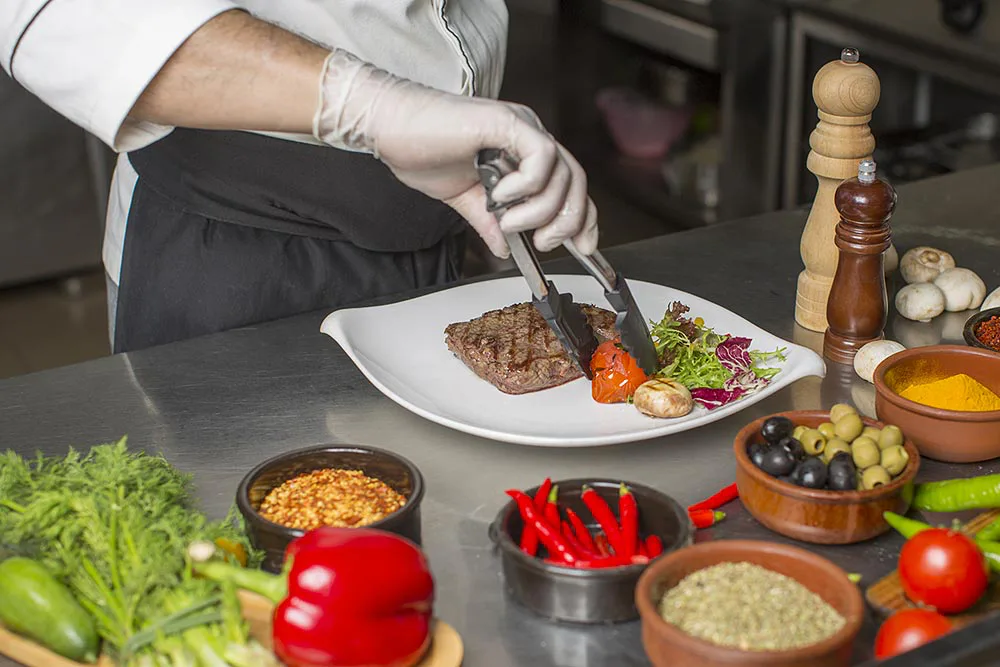

| Inicio | Origen de la comida | Nutrición | Formulario |
La gastronomía es el estudio de la relación entre la cultura y la comida. Cada cultura tiene su propia forma de cocinar y comer, lo que refleja su historia, geografía, clima y tradiciones.
La forma de cocinar la comida varía mucho de una cultura a otra. Algunas culturas prefieren cocinar la comida a fuego lento, mientras que otras prefieren cocinarla a fuego alto. Algunas culturas utilizan especias y hierbas para dar sabor a la comida, mientras que otras prefieren la comida sin condimentos.
En algunas culturas, la comida se cocina en el horno, mientras que en otras se cocina en la parrilla o en la sartén. Algunas culturas prefieren cocinar la comida al vapor, mientras que otras prefieren cocinarla en agua o aceite.
Cada país tiene sus propios platos típicos que reflejan su cultura y tradiciones. Algunos ejemplos son:
Estos son solo algunos ejemplos, pero cada país tiene una gran variedad de platos típicos que reflejan su cultura y tradiciones culinarias.
Que es la gastronomíaLa gastronomía es el estudio de la relación entre la cultura y la comida. Cada cultura tiene su propia forma de cocinar y comer, lo que refleja su historia, geografía, clima y tradiciones. |
¿Cómo se cocina la comida en diferentes culturas?La forma de cocinar la comida varía mucho de una cultura a otra. Algunas culturas prefieren cocinar la comida a fuego lento, mientras que otras prefieren cocinarla a fuego alto. Algunas culturas utilizan especias y hierbas para dar sabor a la comida, mientras que otras prefieren la comida sin condimentos. En algunas culturas, la comida se cocina en el horno, mientras que en otras se cocina en la parrilla o en la sartén. Algunas culturas prefieren cocinar la comida al vapor, mientras que otras prefieren cocinarla en agua o aceite. |
||
¿Cuáles son los platos típicos de cada país?Cada país tiene sus propios platos típicos que reflejan su cultura y tradiciones. Algunos ejemplos son:
Estos son solo algunos ejemplos, pero cada país tiene una gran variedad de platos típicos que reflejan su cultura y tradiciones culinarias.  |
¿Cómo se preparan los alimentos?Los alimentos pueden ser preparados de diferentes maneras, dependiendo del tipo de alimento y de la cultura culinaria. Algunas técnicas de preparación son:
|
||
Desventajas de la gastronomíaLa gastronomía es una de las actividades más importantes de la humanidad, ya que es la que nos permite alimentarnos y sobrevivir. Sin embargo, también tiene sus desventajas:
|
| Inicio | Origen de la comida | Nutrición | Formulario |